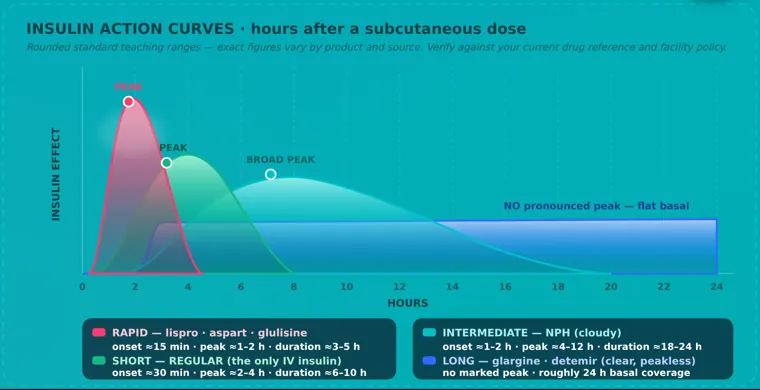
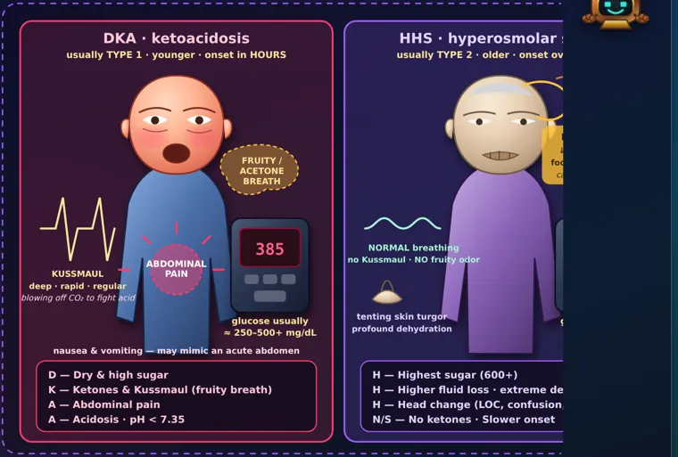
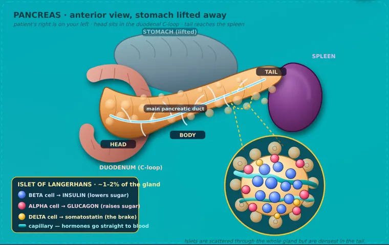
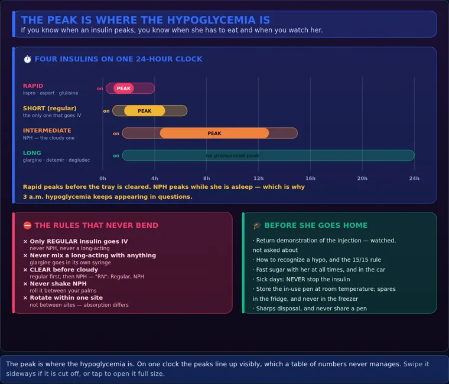

NUR 258 · Module 6
Diabetes
Understand the mechanism. Recognize the emergency. Connect treatment to daily care.

- Mechanism
Follow insulin and glucose.
- Clues
Connect symptoms, glucose and ketones.
- Care
Understand medicines and monitoring.
- Protection
Support daily care and complication prevention.
Start with one topic. Read its visual, explain it aloud, then try the practice questions.
Visual 01 · Diabetes
Two hormones help balance glucose
Beta cells release insulin. Alpha cells release glucagon.

After a meal
- Blood glucose risesInsulin helps move glucose into responsive cells and supports storage.
- Between mealsGlucagon signals the liver to release glucose.
When regulation fails
Autoimmune beta-cell loss usually causes severe insulin deficiency. Insulin replacement is essential.
Insulin resistance plus declining beta-cell function. Treatment changes with clinical needs.
Sources: NIDDK · Diabetes overview · NIDDK · Insulin, medicines and other treatments
Visual 02 · Diabetes
DKA and HHS: compare all the criteria
Both need urgent care. Either can occur in type 1 or type 2 diabetes, and overlap is possible.
DKA
Ketones + acidosis
- Glucose ≥200 mg/dL or known diabetes.
- β-hydroxybutyrate ≥3 mmol/L or urine ketones ≥2+.
- pH <7.3 and/or bicarbonate <18 mmol/L.
Glucose can be lower in euglycemic DKA.
HHS
Hyperosmolarity
- Glucose ≥600 mg/dL.
- Effective osmolality >300 or total >320 mOsm/kg.
- No significant ketosis: β-hydroxybutyrate <3 mmol/L or urine ketones <2+.
- pH ≥7.3 and bicarbonate ≥15 mmol/L.
- Assess and begin prescribed fluidsMonitor circulation, mental status, glucose and laboratory results.
- Check potassium before insulinIf K⁺ is below 3.5 mmol/L, replace potassium and delay insulin until it is above 3.5, under protocol.
- Treat and reassessInsulin, potassium and fluid plans require repeated monitoring. Route and setting depend on severity.
Sources: ADA 2026 · Diabetes care in the hospital · 2024 international consensus · Hyperglycemic crises
Visual 03 · Diabetes
Insulin timing is a range
General examples after a subcutaneous dose; check the exact product.
Duration 2–4 h
Duration 3–6 h
Duration 12–18 h
Duration Up to 24 h
Connect the peak to care
- Coordinate doses with the prescribed meal plan.
- Anticipate hypoglycemia when activity is strongest.
- Check glucose when symptoms occur; do not wait for a predicted peak.
Handle the actual product
- Verify the insulin name, concentration, dose and route.
- Meal timing, storage and mixing rules are product-specific.
- Do not use a universal “8-hour snack” rule.
Sources: CDC · Insulin types and timing
Visual 04 · Diabetes
Recognize a low; respond by swallowing ability
Check glucose when possible. A reading below 70 mg/dL needs action.
Possible low glucose
- Shaking, sweating, hunger or palpitations.
- Confusion, unusual behavior or reduced alertness.
- Severe episodes may cause seizure or loss of consciousness.
Possible high glucose
- Thirst and frequent urination.
- Fatigue, blurred vision or unexplained weight loss.
- Vomiting, deep breathing or altered consciousness need urgent assessment.
Can the person safely swallow?
- Give 15 g fast-acting carbohydrateUse glucose tablets/gel or a suitable measured drink.
- Recheck in 15 minutesRepeat if still below 70 mg/dL. Follow with food as indicated by the care plan.
- Get emergency helpDo not give food or drink by mouth.
- Use emergency treatmentGlucagon or IV glucose according to setting and protocol.
Sources: ADA · Low blood glucose · NIDDK · Diabetes overview
Visual 05 · Diabetes
Protect the organs affected by diabetes
Glucose, blood pressure and lipid care work together with screening.
diabetes care
Retinal screening as recommended.
Urine albumin and kidney function assessment.
Manage cardiovascular risks.
Check sensation, circulation and skin.
Daily foot routine
- Look at soles and between toes; use a mirror if needed.
- Wash and dry carefully. Wear protective, well-fitting footwear.
- Avoid barefoot walking, heating pads and self-treatment of corns.
Report changes promptly
- New wounds, blisters, redness, warmth or swelling.
- Color change, drainage or a sore that is not healing.
- Do not wait for pain: reduced sensation can hide injury.
Sources: NIDDK · Diabetes overview · NIDDK · Diabetes and foot problems
Visual 06 · Diabetes
Different treatments act at different targets
The plan reflects diabetes type, glucose patterns, organ health and preferences.
Supplies insulin the body needs.
Often used in type 2 diabetes; monitor kidney-related suitability.
Supports glucose control; some products also treat obesity.
Selected drugs offer heart/kidney benefits; teach ketoacidosis precautions.
Increase insulin release; hypoglycemia is a key concern.
Specialist options for selected patients, with ongoing follow-up.
Sources: NIDDK · Insulin, medicines and other treatments · ADA 2026 · Diabetes care in the hospital
Visual 07 · Diabetes
Build a balanced plate
A practical starting point; carbohydrate needs and insulin plans are individualized.
Nonstarchy
vegetables¼
Lean protein¼
Carbohydrate
foods
- Choose water or another unsweetened drink.
- Fruit, starches, milk and yogurt can contribute carbohydrate.
- The vegetable half means nonstarchy vegetables.
- Match meal timing and carbohydrate choices to the treatment plan.
Sources: ADA · Healthy eating
Visual 08 · Diabetes
Illness: use a written plan
Prepare supplies and contact instructions before someone becomes sick.
- Monitor more oftenCheck glucose; check ketones when the care plan calls for it.
- Keep essential insulin goingPeople with type 1 diabetes need basal insulin even when not eating. Follow individual dose and medication instructions.
- Maintain fluids and contact the teamUse the sick-day plan for intake, glucose changes and medication adjustments.
- Escalate warning signs promptlyTrouble breathing, confusion, persistent vomiting or inability to keep fluids down needs urgent help. Do not wait two days.
Sources: CDC · Managing sick days · NIDDK · Insulin, medicines and other treatments · 2024 international consensus · Hyperglycemic crises
Practice: 8 questions
No timer. Check each answer for an explanation.
Mind map, slides, recordings and visual references
The sections every module page on this site carries — kept here so Module 6 matches the others.
🧠 Mind maps 1
One per disorder, built from the structure of your ATI chapter.
🎯 Who gets it
- DKA risk: undiagnosed or untreated type 1 diabetes, or skipping insulin doses.
- A missed or too-low insulin dose can trigger DKA.
- Illness or emotional stress raises insulin demand through faster carbohydrate metabolism.
- Infection is the most common trigger of DKA.
👀 What you see
- Polyuria: osmotic diuresis from hyperglycemia leads to excess urine output.
- Polydipsia: fluid loss from diuresis triggers excessive thirst and dehydration.
- Polyphagia: cells can't use glucose, so hunger increases despite eating.
- Weight loss occurs as the body breaks down fat cells can't use.
🧪 What confirms it
- DKA blood glucose typically exceeds
250 mg/dL, sometimes reaching800 mg/dLor higher. - HHS blood glucose exceeds
600 mg/dL. - DKA sodium can run low or normal, shifting with hyperglycemia, dehydration, and fluid changes.
- DKA potassium starts high as it leaves cells, then drops after fluids and insulin.
🩺 What you do
- Recheck vital signs at
15-minintervals initially, tapering toevery 4 hronce the client stabilizes. - Always treat the underlying cause, most often infection.
- Give isotonic fluids; the client may need
6 to 9 Lin24 hrto replace half the deficit. - Watch older adults closely for fluid overload risk (heart failure, pulmonary complications).
💬 What you teach
- Wear a medical alert bracelet identifying your diabetes diagnosis.
- Take steps to prevent dehydration and future hyperglycemic crises.
- Drink
2 to 3 L/dayof fluids from food, beverages, and water unless restricted.
Read left to right: who gets it → what you see → what confirms it → what you do → what goes wrong. Cover a column and rebuild it out loud.
📊 Lecture slides 2
The decks this module is built on.
🎥 Lecture recordings 6
Tap a card to open that recording in Google Drive. The same list lives in the lecture library.
🖼️ Infographics 11
Tap a card to open the matching graphics in your infographic library.

📚Complications & SignsOpen the full study page →
🖼️DKA & HHNSOpen matching infographics →🖼️DKA vs HHNSOpen matching infographics →
🖼️Diabetes - Patho, Signs & SymptomsOpen matching infographics →
📚Insulin & Education_v2Open the full study page →🖼️Diabetes — Pharmacology & SurgeryOpen matching infographics →📚Signs & SymptomsOpen the full study page →📄 Simple Nursing handouts for this module — 3 of them, straight from your Drive.
Preview here
Preview here
🖼️ Visual references 9
Everything in the Visual library tagged NUR 258 · M6, grouped by type. Tap a group to open it; tap a card to open the file or page.
Infographics 3
Study guides & PDFs 3
PowerPoints 3
📋 Active Learning Templates 1
One per disorder. Every row is filled from that section of the ATI chapter — print it, cover the right, rebuild it.
📋 Complications of Diabetes Mellitus (DKA and HHS)6 parts
🖼️ InfographicsDKA vs HHNS
Filled from ATI chapter 83, row by row from that chapter’s own sections — 12 of 12 rows have content.
🧭 What it isAlterations in Health (Diagnosis) · Health Promotion & Disease Prevention
Alterations in Health (Diagnosis)
- DKA is a rapid, life-threatening emergency in type 1 (sometimes type 2) diabetes marked by hyperglycemia above 250 mg/dL, ketosis, and acidosis; HHS is a slower-onset crisis with glucose above 600 mg/dL, severe dehydration, and no ketosis.
Health Promotion & Disease Prevention
From this module — built from the notes above on this page, not a section of the ATI chapter.
- Sick-day rules taught before the first illness. Never stop insulin because you are not eating — illness raises glucose without food, and stopping insulin is how people arrive in DKA.
- Check glucose every
3–4 hourswhen unwell, and ketones if glucose is above about240 mg/dLor vomiting. - Fluid hourly; carbohydrate as liquid if solid food is not possible.
- Know when to call: vomiting beyond a few hours, moderate or large ketones, or glucose that will not come down.
- Annual influenza vaccination and prompt treatment of infection — infection is the commonest trigger for both.
👀 How it shows upAssessment — Risk Factors · Assessment — Expected Findings
Assessment — Risk Factors
- DKA risk: undiagnosed or untreated type 1 diabetes, or skipping insulin doses.
- A missed or too-low insulin dose can trigger DKA.
- Illness or emotional stress raises insulin demand through faster carbohydrate metabolism.
- Infection is the most common trigger of DKA.
- High cortisol, glucagon, and epinephrine boost glucose production and blunt insulin's effect.
- HHS risk: severe hyperglycemia causes sustained osmotic diuresis from too little insulin.
- In HHS, enough insulin remains to block ketosis but not to control glucose.
- Poor fluid intake or kidney function worsens hyperosmolarity and dehydration in HHS.
Assessment — Expected Findings
- Polyuria: osmotic diuresis from hyperglycemia leads to excess urine output.
- Polydipsia: fluid loss from diuresis triggers excessive thirst and dehydration.
- Polyphagia: cells can't use glucose, so hunger increases despite eating.
- Weight loss occurs as the body breaks down fat cells can't use.
- GI symptoms (nausea, vomiting, abdominal pain) stem from ketosis and acidosis.
- Blurred vision, headache, and weakness result from fluid volume depletion.
- Hypotension results from dehydration caused by osmotic diuresis.
- A fruity breath odor comes from ketone buildup in the blood.
🧪 How it is confirmedLaboratory Tests · Diagnostic Procedures
Laboratory Tests
- DKA blood glucose typically exceeds
250 mg/dL, sometimes reaching800 mg/dLor higher. - HHS blood glucose exceeds
600 mg/dL. - DKA sodium can run low or normal, shifting with hyperglycemia, dehydration, and fluid changes.
- DKA potassium starts high as it leaves cells, then drops after fluids and insulin.
- HHS sodium is usually normal or low, shifting with dehydration and osmotic fluid changes.
Diagnostic Procedures
From this module — built from the notes above on this page, not a section of the ATI chapter.
- DKA: glucose usually
>250 mg/dL, pH <7.35, bicarbonate low, ketones present, anion gap raised. - HHS: glucose often
>600 mg/dL, serum osmolality >320, little or no ketosis, pH near normal. - DKA is acidosis. HHS is dehydration. That is the whole distinction, and it decides the emphasis of treatment.
- ECG for potassium effects; look for the trigger — infection, missed insulin, myocardial infarction.
- Kussmaul respirations and a fruity breath belong to DKA, not HHS.
🩺 What you doNursing Care · Medications · Therapeutic Procedures
Nursing Care
- Recheck vital signs at
15-minintervals initially, tapering toevery 4 hronce the client stabilizes. - Always treat the underlying cause, most often infection.
- Give isotonic fluids; the client may need
6 to 9 Lin24 hrto replace half the deficit. - Watch older adults closely for fluid overload risk (heart failure, pulmonary complications).
- Start rapid
0.9%sodium chloride for1 to 3 hr, switching to0.45%if sodium is elevated. - Add dextrose to IV fluids when glucose falls to
200 mg/dLin DKA or250 mg/dLin HHS. - Use IV insulin, not subcutaneous, for moderate to severe DKA.
- Give regular insulin
0.1 unit/kgIV bolus, then infuse at0.05 unit/kg/hr. - Check glucose hourly; target glucose under
200 mg/dL, pH over7.3, bicarbonate over15 mEq/L.
Medications
From this module — built from the notes above on this page, not a section of the ATI chapter.
- Isotonic fluid first — both are profoundly volume depleted, HHS more so.
- Regular insulin by continuous IV infusion — only regular insulin is given intravenously.
- Potassium before or with the insulin once it is not high and urine is flowing. Insulin drives potassium into cells and can drop it dangerously.
- Add dextrose when glucose reaches about
200–250 mg/dLso the infusion can continue clearing ketones without hypoglycemia. - Bicarbonate only for severe acidosis; it is not routine.
Therapeutic Procedures
From this module — built from the notes above on this page, not a section of the ATI chapter.
- Hourly glucose, and electrolytes every
2–4 hours; strict intake and output. - Continuous cardiac monitoring while potassium is shifting.
- Overlap the subcutaneous insulin with the infusion by
1–2 hoursbefore stopping it, or the ketosis returns. - Correct glucose gradually — too fast risks cerebral edema, particularly in the young.
- Treat the precipitating cause, or it happens again next week.
💬 Around the patientClient Education · Interprofessional Care
Client Education
- Wear a medical alert bracelet identifying your diabetes diagnosis.
- Take steps to prevent dehydration and future hyperglycemic crises.
- Drink
2 to 3 L/dayof fluids from food, beverages, and water unless restricted. - If glucose runs low, drink liquids that contain sugar.
- Check glucose every
2 to 4 hrduring illness, and keep taking insulin. - Check urine for ketones whenever glucose exceeds
240 mg/dL. - Drink carbohydrate- and electrolyte-containing fluids, like sports drinks, if solid food isn't tolerated.
Interprofessional Care
From this module — built from the notes above on this page, not a section of the ATI chapter.
- Provider or intensivist for the insulin and fluid protocol.
- Diabetes educator before discharge — an admission for DKA is a teaching failure until proven otherwise.
- Pharmacist for infusion concentrations and the transition to subcutaneous insulin.
- Dietitian and social work — cost of insulin and supplies is a common and unspoken cause of missed doses.
⚠️ What goes wrongComplications
Complications
From this module — built from the notes above on this page, not a section of the ATI chapter.
- Hypokalemia during treatment — the commonest serious complication, and the reason potassium is checked before insulin.
- Cerebral edema from correcting glucose or sodium too quickly. Headache and falling consciousness during treatment is the warning.
- Hypoglycemia if dextrose is not added in time.
- Fluid overload, especially in older clients and in HHS.
- Thrombosis — HHS is a hyperviscous, hypercoagulable state.
Course resources
Handouts and related pages, once each. The slide decks and recordings are in the section above. They open separately from this study guide.
Handouts · 3
Infographic collection · 1
Related study pages and course video
- Insulin & Patient Education
- Insulin peaks reference page
- Complications & Signs
- Signs & Symptoms
- All module 6 recordings
- Original DKA/HHS course video · Use the current criteria and potassium guidance above when reviewing older material.
- Module 6 visual library